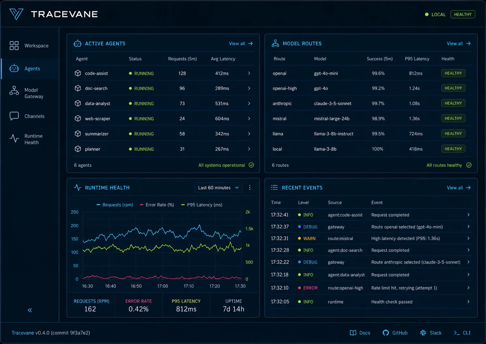
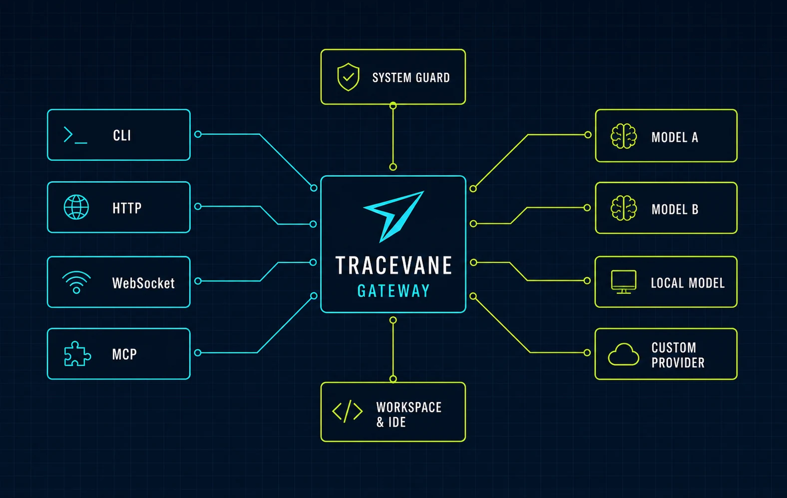

Dashboard
Unified health, routing, channels, Agent runs, and recovery status.
Dashboard, files, IDE, model routing, channels, CLI agents, and system recovery — packaged as one maintainable extension.

Tracevane keeps each runtime boundary visible while bringing daily operations into one coherent surface.
Unified health, routing, channels, Agent runs, and recovery status.
Files, online editing, preview, terminal, Git, and a project workbench.
Route models and providers through explicit protocol and health boundaries.
Connect message inputs to Codex, Claude Code, and OpenCode workflows.
Inspect configuration, device trust, service health, and recovery evidence.
Use a local 3760 entry or mount Tracevane at the OpenClaw Gateway.

OpenClaw must already be installed and onboarded. The Tracevane installer verifies Release metadata and SHA-256.
Clear install paths, public maintenance boundaries, and direct links to the source.
Tracevane is open source and in maintenance mode. Contributions that improve stability, documentation, and compatibility are welcome.
Read CONTRIBUTING.md →Report reproducible issues, propose focused changes, and follow current maintenance work.
View on GitHub →